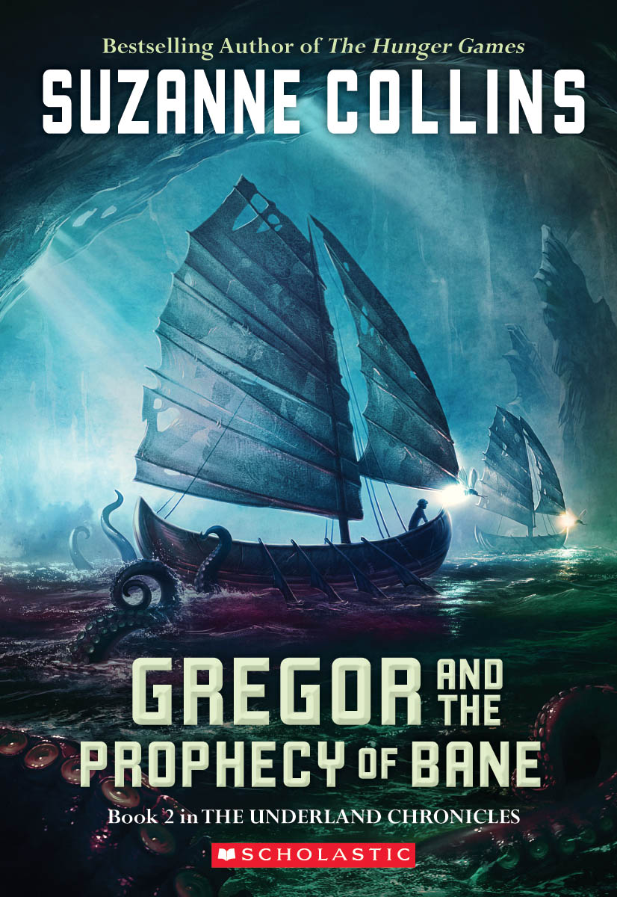

GREGOR AND THE PROPHECY OF BANE:
BOOK TWO IN THE UNDERLAND CHRONICLES
A NEW YORK TIMES BESTSELLING SERIES
A BOOK SENSE BESTSELLING SERIES
A BOOK SENSE CHILDREN'S PICK
2005 CONNECTICUT BOOK AWARD FINALIST--CHILDREN'S LITERATURE
"Collins crafts another edge-of-the-seat quest... Gregor's resolution of the prophecy will surprise and delight readers--who will be equally delighted to see a new prophecy in Gregor's luggage when he returns home. Yessss!"
--Kirkus Reviews
"...fans will not be disappointed with this exciting, action-packed sequel, whose ending suggests more adventures to come."
--Booklist
"As in the first book, the questers face adventure, danger, death, loss, and change on their journey, and the surprising conclusion leaves room for another sequel. Interpersonal conflict and old enmities among the well-developed characters add depth, and the hazards and beauties of the subterranean Underland are fully realized and clearly presented. An urgent mood and a sense of impending danger are conveyed. This is a strong choice for fantasy fans, including reluctant readers, even if they're not familiar with Gregor's first adventure."
--School Library Journal
"Along with many Underlanders [rats notwithstanding], Gregor's fans will cheer the promise of future visits."
--The Horn Book Magazine
"Danger abounds, calling for courage and ingenuity. Gregor consistently makes the right choices and triumphs. Fast-paced adventure and endearing characters make this book an excellent selection for younger fantasy readers."
--VOYA